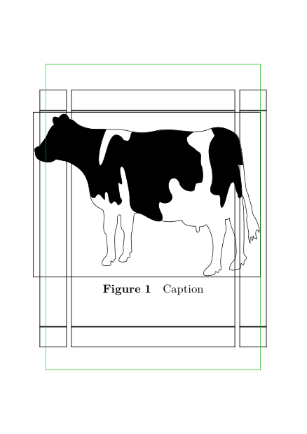

Contents
Summary
The command
\offset
moves stuff around
Settings
Description
Move stuff around. Works also in floats.
Examples
Example 1
Create an image that bleeds into the left margin:
-
\setuppapersize [A8] [A7] \setuplayout [location=middle, width=middle] \showframe \starttext \placefigure[top][fig:ref] {Caption} {\offset[leftoffset=-3mm] {\externalfigure[cow][frame=on,width=\dimexpr\paperwidth+3mm\relax]}} \stoptext
- 
Note: the leftoffsethas to be the whole 3mm, because even though the float is normally centered on the page (so there would be 1.5mm sticking out on both sides), the \offset is actually processed before that centering step. And it effectively makes the float box exactly \paperwidth wide, meaning it will be centered 'perfectly' with 3mm
sticking out on the left side.